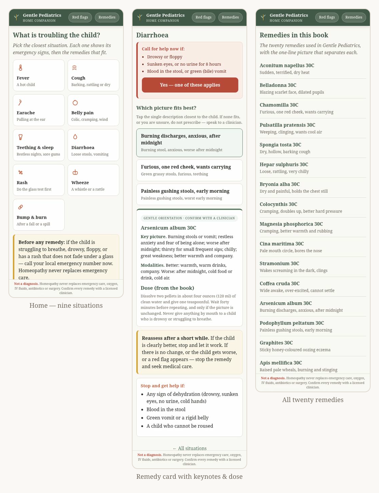

Nine situations, one tap away
Fever, cough, earache, belly pain, teething & sleep, diarrhoea, rash, wheeze, and bump & burn — the acute situations the book covers.
A small, offline phone app for a parent at the cot side — nine common childhood situations, a red-flag check that is always visible, and gentle remedy orientation from the book Gentle Pediatrics: A Practical Homeopathic Companion.
Free & fully offline — nothing to install. The Android .apk is sideload-only (allow installs from unknown sources).
Two taps gets a parent to a remedy. The emergency check is always visible, never hidden — and it never blocks the common case.
Fever, cough, earache, belly pain, teething & sleep, diarrhoea, rash, wheeze, and bump & burn — the acute situations the book covers.
Every situation screen carries the two or three signs that are genuine emergencies for that situation, with a one-tap path to emergency help.
Tap the situation, then tap the picture that fits the child. You land on the remedy card — no gate, no checklist to clear first.
A remedies index lists every remedy in the book with the one-line picture that separates each — the keynotes, condensed and attributed.
The full emergency list sits in one place, along with the glass test for a rash that does not fade under pressure.
It installs to the home screen as a Progressive Web App and runs full screen and offline — no account, no analytics, nothing stored or sent.
The design goal is simple: get out of the parent's way, but never hide the emergency signs.
The home screen is nine symptom tiles. Tap the one that matches what the child is doing right now.
Fever · cough · earache · belly pain · teething & sleep · diarrhoea · rash · wheeze · bump & burn
A red strip at the top names the genuine emergencies for that situation. If none applies, tap the description that fits the child.
The strip never blocks the ordinary case — it just stays in view.
You get the key picture, the modalities (better / worse), the dose as quoted from the book, a reassess note, and a "stop and get help if" list.
Labelled as gentle orientation — confirm with a clinician.

No build step, no framework, no dependencies — the companion is a single self-contained HTML file with a PWA manifest and an offline service worker. Open it in any browser and it works.
Open the live app on a phone, then add it to your home screen. It then runs full screen and offline.
No build step and no dependencies. Open the file in any browser, or serve the folder:
python3 -m http.server 8080
# then open http://localhost:8080The source is the repository root: index.html, manifest.webmanifest, sw.js and icon.svg. This page is served from /docs, and a working copy of the app is published at /play/.
 No build step
Offline PWA
Free to use
Educational reference
Not a medical device
No build step
Offline PWA
Free to use
Educational reference
Not a medical device
Plain answers, including the ones that matter most.
No. Gentle Pediatrics — Home Companion is an educational reference and companion tool. It is not a diagnostic device, it does not diagnose, and it does not replace assessment by a doctor. The remedy keynotes and doses are condensed from the book and are for educational orientation only.
No. Homeopathy never replaces emergency resuscitation, oxygen, IV fluids, indicated antibiotics or surgery. There are no homeopathic vaccines, and homeopathy's evidence base is contested in modern clinical research.
If the child is struggling to breathe, is drowsy or floppy, has a rash that does not fade under a clear glass, or is a baby under 12 weeks with any fever — call your local emergency number now (108 / 112 India · 999 UK · 911 US) and do not give a remedy first.
Nine acute situations: fever, cough, earache, belly pain, teething and sleep, diarrhoea, rash, wheeze, and bump and burn. It covers the nine acute situations in the book — it is not a general symptom checker and must not be used as one.
Yes. It is a Progressive Web App with a service worker, so after the first load it runs full screen and offline. There is no account, no analytics, and nothing is stored or sent.
The keynotes and doses are condensed from the book Gentle Pediatrics: A Practical Homeopathic Companion by Dr. Sohil Momin, B.H.M.S., and are attributed as such. They are not independently re-verified for the app. Always confirm any remedy with a licensed clinician, and never give anything by mouth to a drowsy or struggling child.
It is free to use. Copyright © 2026 Dr. Sohil Momin — free to use, copy and share for personal, educational and non-commercial purposes, with attribution and the notice kept. Commercial use or resale needs written permission. See the LICENSE for the full terms and the medical disclaimer.
It is honest about being a prototype. The project brief lists what still stands between it and a public release: clinical sign-off of every red flag, keynote and dose; a regulatory check; emergency numbers per region; localisation into Hindi and the other languages of the book; accessibility work; parent testing; and hosting over HTTPS so the service worker can install.